مرحلهٔ ۱: عمارت باغ ایرانی (آسان)
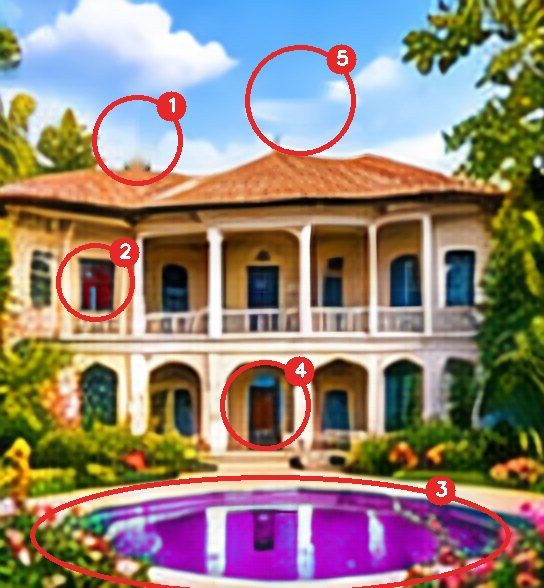
- سرو پشت بام برداشته شده است
- رنگ پنجرهٔ طبقهٔ بالا (سمت چپ) عوض شده است
- رنگ آب استخر تغییر کرده است
- رنگ در ورودی وسط تغییر کرده است
- یک تکه ابر برداشته شده است
مرحلهٔ ۲: کودک و توپ فوتبال (آسان)
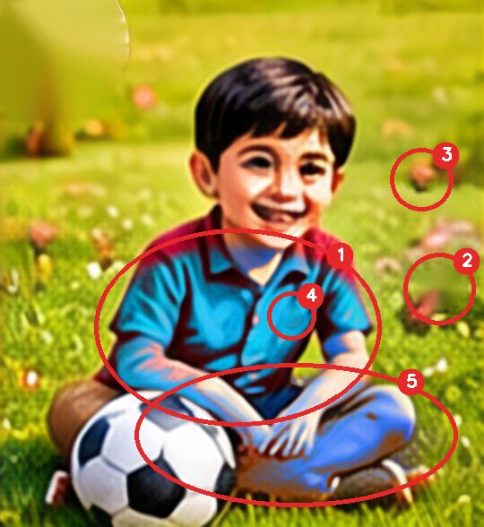
- رنگ پیراهن تغییر کرده است
- گلهای صورتی سمت راست حذف شدهاند
- یک گل صورتی تازه در چمن اضافه شده است
- دکمهٔ سفید پیراهن حذف شده است
- رنگ شلوار تغییر کرده است
مرحلهٔ ۳: تُنگ ماهی قرمز (آسان)
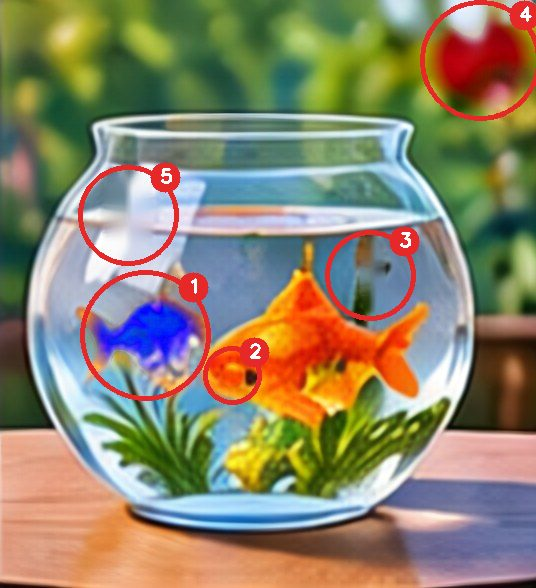
- ماهی کوچک رنگ دیگری دارد
- چشم ماهی بزرگ پاک شده است
- گیاه پشت ماهی بزرگ حذف شده است
- رنگ برگهای پسزمینه عوض شده است
- بازتاب سفید روی شیشهٔ تُنگ حذف شده است
مرحلهٔ ۴: انار (آسان)
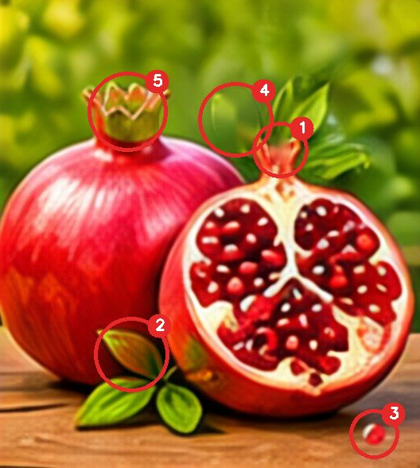
- نوک انار نیمه حذف شده است
- برگ پایین زرد شده است
- یک دانهٔ انار روی میز افتاده است
- یک برگ از دستهٔ برگهای بالا حذف شده است
- رنگ تاج انار سمت چپ تغییر کرده است
مرحلهٔ ۵: پرنده روی شاخه (آسان)
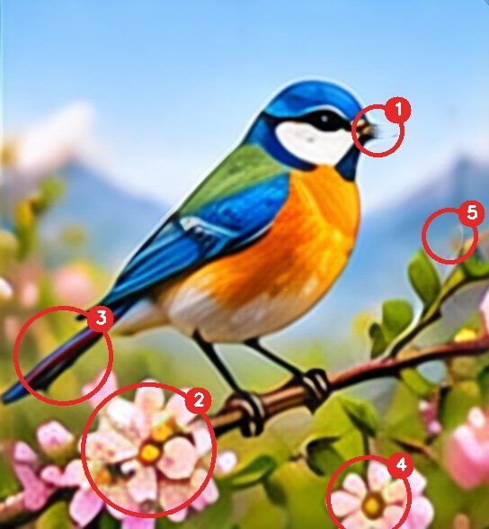
- نوک پرنده کوتاهتر شده است
- گلهای پایین سمت چپ رنگ دیگری دارند
- رنگ دم پرنده تغییر کرده است
- رنگ گل پایین سمت راست تغییر کرده است
- غنچهٔ سمت راست حذف شده است
مرحلهٔ ۶: ستونهای تخت جمشید (متوسط)
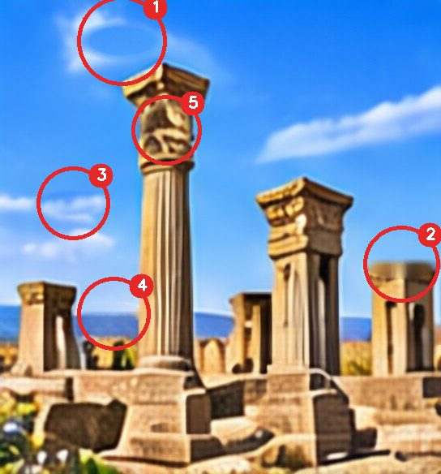
- ابر بالای سمت چپ حذف شده است
- سرستون سمت راست برداشته شده است
- یک ابر تازه کنار ستون اضافه شده است
- بخشی از کوه دوردست حذف شده است
- نقش سرستون بلند برعکس شده است
مرحلهٔ ۷: بازار سرپوشیده (متوسط)
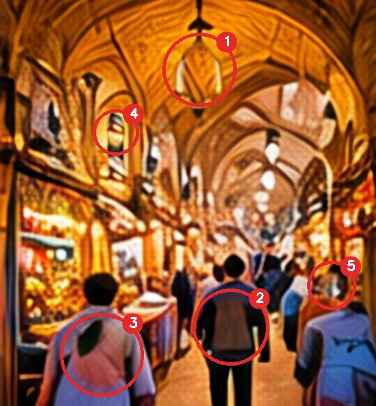
- فانوس آویز سقف حذف شده است
- رنگ لباس مرد وسط تغییر کرده است
- رنگ لباس نفر جلو (چپ) تغییر کرده است
- یک پنجرهٔ طاقی بسته شده است
- سر نفر سمت راست حذف شده است
مرحلهٔ ۸: گلدان گل (متوسط)
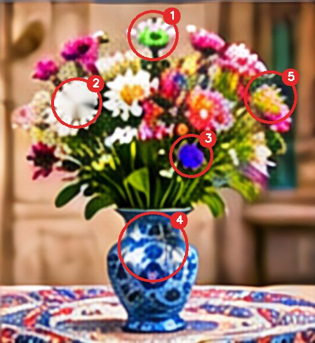
- گل صورتی بالا رنگ دیگری دارد
- گل سفید سمت چپ حذف شده است
- گل زرد وسط آبی شده است
- نقش روی گلدان برعکس شده است
- گل سمت راست رنگ دیگری دارد
مرحلهٔ ۹: مسجد کاشیکاری (متوسط)
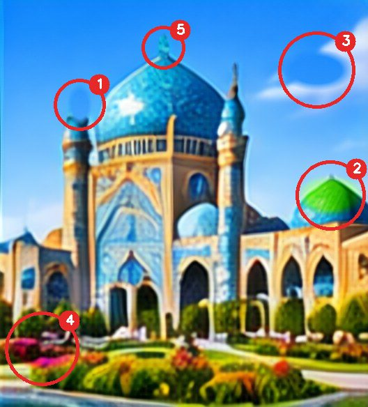
- نوک منارهٔ سمت چپ برداشته شده است
- گنبد کوچک سمت راست رنگ دیگری دارد
- ابر سمت راست حذف شده است
- گلهای جلو سمت چپ رنگ دیگری دارند
- میلهٔ نوک گنبد بزرگ حذف شده است
مرحلهٔ ۱۰: سماور و چای (متوسط)
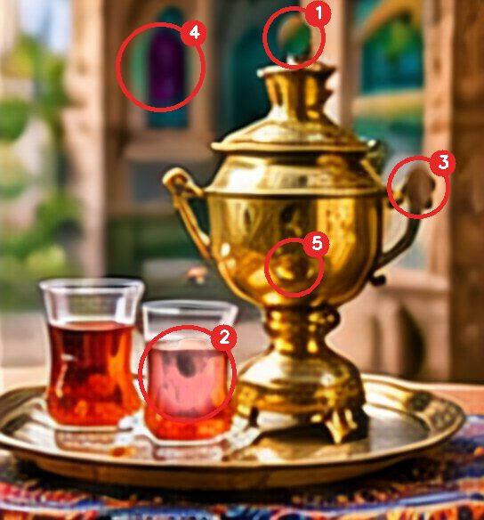
- دستگیرهٔ درِ سماور برداشته شده است
- چای استکان راست کمرنگتر شده است
- دستهٔ راست سماور حذف شده است
- رنگ پنجرهٔ پسزمینه تغییر کرده است
- یک حلقه از پایهٔ سماور حذف شده است
مرحلهٔ ۱۱: سنگنگارهٔ باستانی (دشوار)
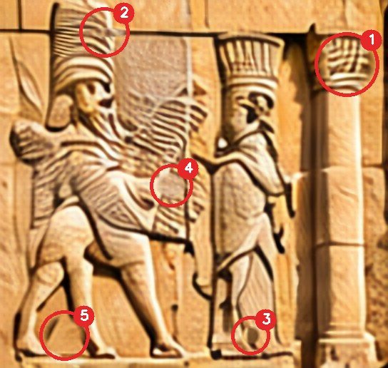
- سرستون سمت راست برعکس شده است
- بخشی از لبهٔ بالای سنگ حذف شده است
- یک لکه روی پای نفر دوم ایجاد شده است
- بخشی از بال پاک شده است
- پای نفر اول برعکس شده است
مرحلهٔ ۱۲: برج میلاد در شب (دشوار)
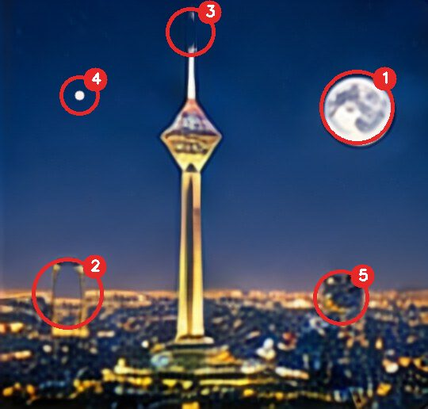
- نقشهای ماه برعکس شده است
- ساختمان بلند سمت چپ حذف شده است
- نوک آنتن برج کوتاهتر شده است
- یک ستاره در آسمان اضافه شده است
- ساختمان سمت راست کوتاهتر شده است
مرحلهٔ ۱۳: فرش ایرانی (دشوار)
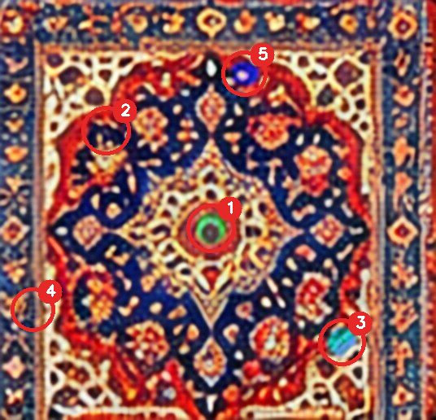
- رنگ مرکز ترنج تغییر کرده است
- نقش گوشهٔ بالا چپ برعکس شده است
- یک نقش پایین راست رنگ دیگری دارد
- یک نقش حاشیهٔ چپ با نقش دیگری عوض شده است
- نقش بالای ترنج رنگ دیگری دارد
مرحلهٔ ۱۴: روستای برفی (دشوار)
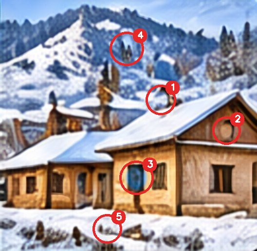
- دودکش بام حذف شده است
- پنجرهٔ زیرشیروانی حذف شده است
- رنگ پنجرهٔ پایین تغییر کرده است
- یک کاج در کوه اضافه شده است
- یک سنگ در برف اضافه شده است
مرحلهٔ ۱۵: سهتار و گل (دشوار)
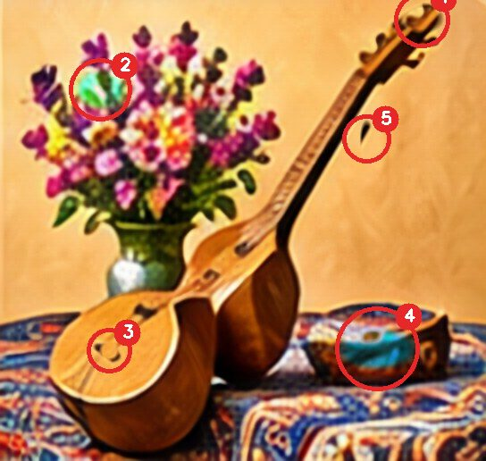
- یکی از گوشیهای ساز حذف شده است
- یک گل بنفش رنگ دیگری دارد
- سوراخ صدای ساز پاک شده است
- رنگ کاسهٔ پشت ساز تغییر کرده است
- یک دستان روی دستهٔ ساز حذف شده است
مرحلهٔ ۱۶: آسیاب بادی و لالهها (دشوار)
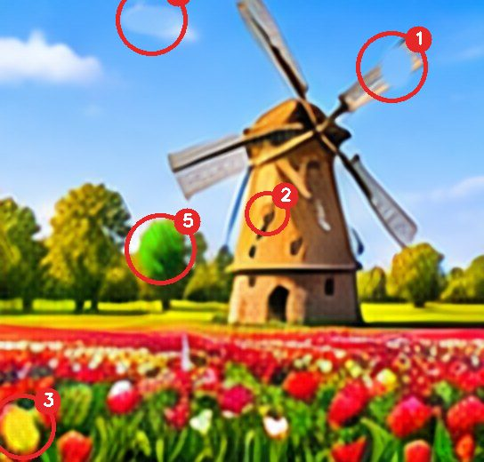
- سر یکی از پرههای آسیاب حذف شده است
- پنجرهٔ برج آسیاب حذف شده است
- یک لالهٔ قرمز زرد شده است
- ابر بالای آسمان حذف شده است
- رنگ درخت پشت آسیاب تغییر کرده است
مرحلهٔ ۱۷: خودروی کلاسیک (دشوار)
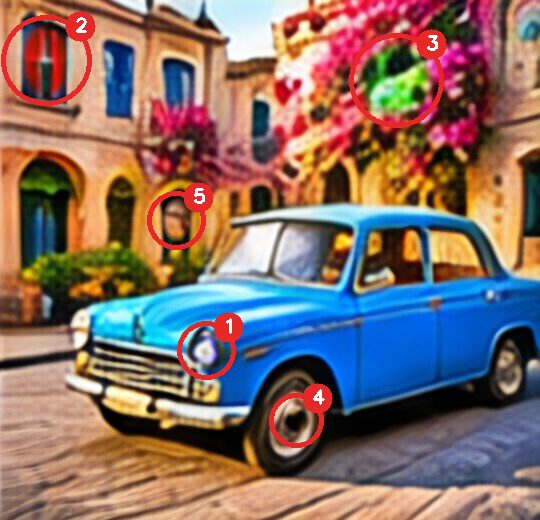
- رنگ چراغ جلو تغییر کرده است
- رنگ پنجرهٔ بالا چپ تغییر کرده است
- رنگ گلهای دیوار تغییر کرده است
- قالپاق چرخ جلو تغییر کرده است
- یک پنجره در ساختمان پوشانده شده است
مرحلهٔ ۱۸: سفرهٔ هفتسین (دشوار)
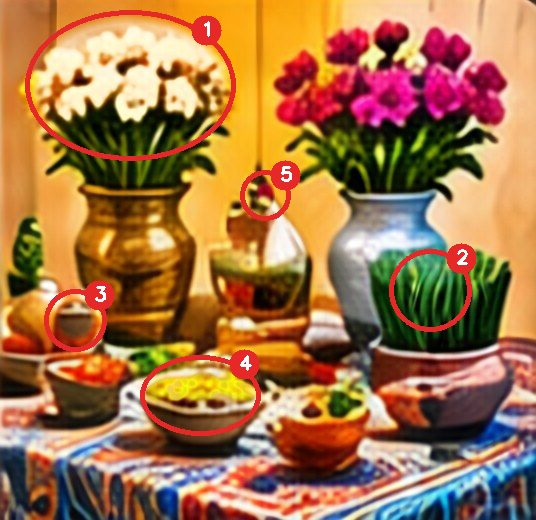
- گلهای زرد سفید شدهاند
- سبزه برعکس شده است
- یک سیب حذف شده است
- رنگ غذای کاسهٔ وسط تغییر کرده است
- شعلهٔ شمع حذف شده است
مرحلهٔ ۱۹: سیوسهپل (دشوار)
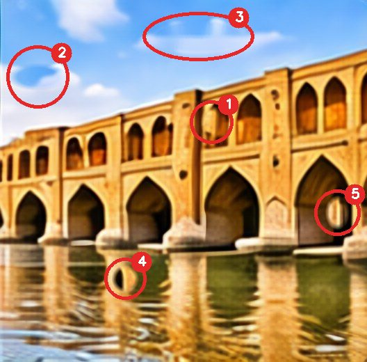
- یک طاقنمای بالای پل پر شده است
- ابر سمت چپ حذف شده است
- ابر بالا حذف شده است
- یک تکه در بازتاب آب تغییر کرده است
- تاریکی زیر یک طاق کم شده است
مرحلهٔ ۲۰: کاشی اسلیمی (دشوار)
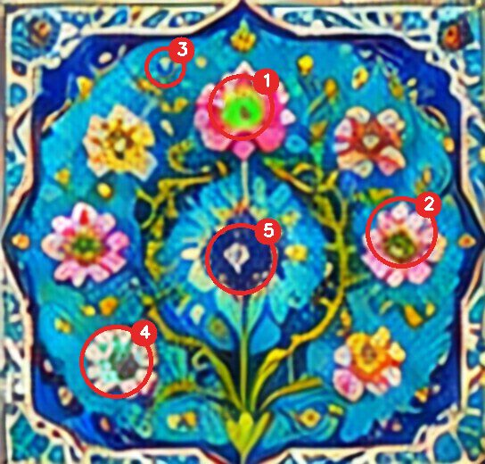
- گل صورتی بالا رنگ دیگری دارد
- گل سمت راست برعکس شده است
- یک غنچهٔ زرد کوچک حذف شده است
- گل پایین چپ رنگ دیگری دارد
- نقش مرکزی برعکس شده است